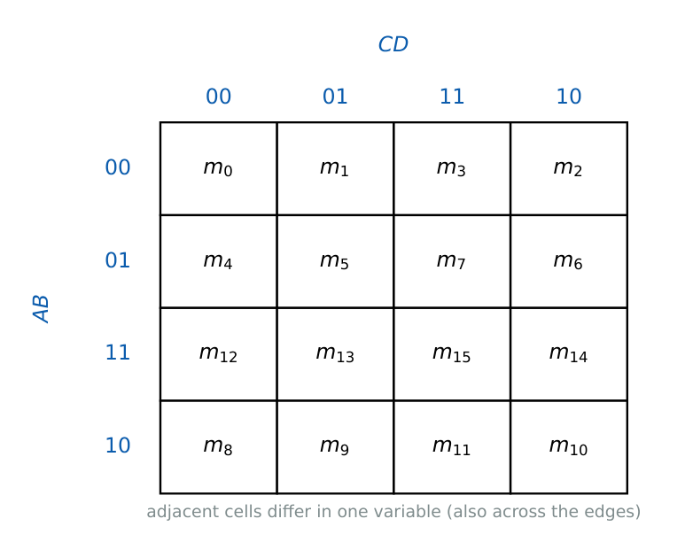

Karnaugh Maps and Boolean Minimization
In this chapter
Reading a minimal SOP/POS from a 3- or 4-variable K-map (with don’t-cares), counting prime and essential prime implicants, NAND/NOR two-level realisations, and spotting static hazards. Often combined with later chapters (MUX, decoder, PLA).
4.1 Why minimise?
Fewer product terms and literals mean fewer gates and gate inputs, less area, power and delay. The K-map is a graphical method that places logically adjacent minterms in physically adjacent cells.
4.2 The K-map
Cells are labelled in Gray-code order so that neighbouring cells (including the wrap-around ones) differ in exactly one variable.

Group the 1s in rectangles of size \(2^k\) (\(1,2,4,8,16\)); a group of \(2^k\) cells eliminates \(k\) variables, giving a product term of \(n-k\) literals.
Groups may wrap around the edges (left–right, top–bottom, and all four corners). Groups may overlap; each should be as large as possible.
In an \(n\)-variable map each cell has exactly \(n\) neighbours.
Prime implicant (PI): a group that cannot be enlarged. Essential PI (EPI): a PI covering a 1 that no other PI covers. A minimal cover must contain all EPIs.
4.2.1 Procedure for minimal SOP
- Mark the 1s (and \(d\) for don’t-cares).
- Circle every 1 that has only one possible largest group \(\Rightarrow\) EPIs.
- Cover the remaining 1s with the fewest and largest additional PIs.
- Read each group: keep variables that are constant across the group (1 \(\to\) uncomplemented, 0 \(\to\) complemented).
Minimal POS: group the 0s, read the group as an AND of complemented variables, then complement (De Morgan) to get a sum term; or minimise \(\overline F\) in SOP and complement the result.
4.2.2 Don’t-care conditions
Input combinations that never occur (or whose output does not matter) are marked \(d\) or \(X\). Treat each \(d\) as 1 if it enlarges a group and as 0 otherwise; never create a group made only of don’t-cares.
\(F(A,B,C,D)=\sum m(0,1,2,5,6,7,8,9,10,14)\).
Quad of the columns \(m_0,m_1,m_8,m_9\): \(B'C'\) (EPI). Quad \(m_2,m_6,m_{10},m_{14}\): \(CD'\) (EPI). Remaining 1s \(m_5,m_7\): group \(A'BD\).
\[
F=B'C'+CD'+A'BD.
\]
Prime implicants: \(CD',\,B'D',\,B'C',\,A'C'D,\,A'BD,\,A'BC\) (six PIs), of which two are essential. Literal count \(=2+2+3=7\).
\(F=\sum m(1,3,7,11,15)+d(0,2,5)\). \(m_{11},m_{15},m_3,m_7\) give the quad \(CD\) (EPI). The remaining minterm \(m_1\) can be covered by \(A'D\) (using \(d_5\)) or \(A'B'\) (using \(d_0,d_2\)), both of the same cost: \[ F=CD+A'D\quad\text{or}\quad F=CD+A'B'. \] Minimal forms are not always unique.
\(F=\sum m(0,2,5,7,8,10,13,15)\): the corners \(m_0,m_2,m_8,m_{10}\) form \(B'D'\); the centre block \(m_5,m_7,m_{13},m_{15}\) forms \(BD\). So \(F=B'D'+BD=B\odot D\).
\(F=\sum m(0,1,2,5,8,9,10)\). Zeros: \(3,4,6,7,11,12,13,14,15\). Minimal SOP of \(\overline F=CD+BD'+AB\). Therefore \[ F=(C'+D')(B'+D)(A'+B'). \]
4.2.3 Five-variable maps
Draw two 4-variable maps (for \(E=0\) and \(E=1\)). Cells in the same position on the two maps are adjacent; groups may be formed across the layers. A group of 8 cells in a 5-variable map eliminates 3 variables and leaves a 2-literal term.
4.3 Quine–McCluskey (tabular) method
Systematic version of the K-map for any number of variables.
- List minterms (and don’t-cares) in binary, grouped by the number of 1s.
- Combine terms from adjacent groups that differ in a single bit; replace that bit by a dash. Repeat until no further combining is possible. Terms never combined are prime implicants.
- Draw the prime-implicant chart (rows PIs, columns minterms, ignoring don’t-cares). Pick EPIs, then cover the remaining minterms with the fewest PIs (Petrick’s method if choices remain).
The complexity grows exponentially with the number of variables, which is why heuristic tools (Espresso) are used in practice.
4.4 Two-level NAND and NOR realisations
SOP \(\to\) NAND–NAND: \(F=\overline{\overline{P_1}\cdot\overline{P_2}\cdots}=P_1+P_2+\cdots\) by De Morgan. Number of NANDs \(=\) (number of product terms) \(+1\) (single-literal terms need no first-level gate; complemented literals need inverters).
POS \(\to\) NOR–NOR: \(F=\overline{\overline{S_1+\cdots}}\) similarly; gates \(=\) (sum terms) \(+1\).
AND–OR–INVERT and OR–AND–INVERT realise \(\overline F\) directly.
For \(F=B'C'+CD'+A'BD\) a NAND–NAND circuit uses \(3+1=4\) NAND gates (with inverters for \(B',C',D',A'\) as needed).
4.5 Hazards
A static-1 hazard is a momentary 0 in an output that should remain 1 when a single input changes; a static-0 hazard is a momentary 1 in an output that should stay 0; a dynamic hazard is multiple transitions on a change that should give one.
- In a two-level SOP circuit, a static-1 hazard exists if two adjacent 1s on the K-map are covered by different groups with no common group. Remedy: add the redundant (consensus) term.
- Example: \(F=AB+A'C\) with \(B=C=1\) and \(A\) changing: add \(BC\) to get \(F=AB+A'C+BC\).
- A hazard-free SOP must cover every pair of adjacent 1s by some product term. Hazards cause trouble only in asynchronous or clock/enable paths.
(i) Do not group cells in a diagonal or in non-power-of-two counts (3, 5, 6). (ii) A minimal expression need not use all PIs, and a PI need not be in the cover; only EPIs must be. (iii) Do not use a don’t-care as the sole content of a group. (iv) Minimal POS is read from the zeros and complemented variables appear uncomplemented in the sum term. (v) Removing the consensus term to minimise introduces a hazard.
Octets and quads first (largest groups), then pairs. Count EPIs by looking at 1s with a single covering group. For \(n=4\) the number of literals in a term is \(4-k\); a quad gives 2 literals. If \(F=\sum m(2,3,6,7,10,11,14,15)\) the map is a whole column pair and the answer is just \(C\).
4.6 GATE problems
Q1. The minimal SOP for \(F=\sum m(2,3,6,7,10,11,14,15)\) (four variables \(A,B,C,D\)) is (A) \(C\) (B) \(D\) (C) \(AB\) (D) \(C+D\).
Q2. The number of neighbouring cells of any cell in a 5-variable K-map is (A) 4 (B) 5 (C) 8 (D) 16.
Q3. \(F=\sum m(0,2,5,7,8,10,13,15)\) equals (A) \(B\oplus D\) (B) \(B\odot D\) (C) \(BD\) (D) \(B+D\).
Q4. The hazard in \(F=AB+\overline AC\) for \(B=C=1\) is removed by adding (A) \(BC\) (B) \(\overline BC\) (C) \(A\overline C\) (D) \(AC\).
Answers: Q1 (A): \(C=1\) in rows with \(C=1\) (cells 2,3,6,7,10,11,14,15). Q2 (B). Q3 (B). Q4 (A): consensus term.
Q5. For \(F=\sum m(4,5,6,7,8,12,13)\), the minimal SOP is (A) \(A'B+BC'+AC'D'\) (B) \(B+AC'D'\) (C) \(A'B+AC'\) (D) \(BC'+A'B\).
Q6. For \(F=\sum m(0,1,2,5,8,9,10)\) the minimal POS is (A) \((C'+D')(B'+D)(A'+B')\) (B) \((C+D)(B+D')(A+B)\) (C) \(B'D'+B'C'+A'C'D\) (D) \((B'+D)(A'+B')\).
Q7. \(F=\sum m(1,3,7,11,15)+d(0,2,5)\). Number of literals in a minimal SOP: (A) 2 (B) 3 (C) 4 (D) 6.
Answers: Q5 (A): \(m_4,m_5,m_6,m_7\to A'B\); \(m_4,m_5,m_{12},m_{13}\to BC'\); \(m_8,m_{12}\to AC'D'\). Q6 (A) from the worked example. Q7 (C): \(CD+A'D\) has \(2+2=4\) literals.
Q8. Number of prime implicants of \(F=\sum m(0,1,2,5,6,7,8,9,10,14)\): ; number of essential ones: .
Q9. Number of 2-input NAND gates (ignoring input inverters) in a two-level NAND–NAND realisation of \(F=AB+CD+EF\) (the output NAND has 3 inputs): .
Q10. Number of literals in the minimal SOP of \(\sum m(0,2,5,7,8,10,13,15)\): .
Answers: Q8: 6 and 2. Q9: 3 first-level NANDs plus 1 output NAND \(=4\) gates. Q10: \(B'D'+BD\) has 4 literals.
Q11. Which statements hold? (A) Every essential prime implicant appears in every minimal SOP. (B) A minimal SOP is always unique. (C) A group of 4 cells in a 4-variable map yields a 2-literal term. (D) Don’t-cares can be used to enlarge groups.
Answers: Q11: (A), (C), (D).
T1. Minimise \(\sum m(0,1,3,7)\). T2. What does a group of 8 in a 4-variable map give? T3. Name the remedy for a static-1 hazard.
Answers: T1: \(A'B'+BC\) (3 variables). T2: a single literal. T3: add the consensus term.
- Gray-ordered map; groups \(2^k\) eliminate \(k\) variables; wrap-around adjacency; \(n\) neighbours per cell.
- EPIs must appear in every minimal cover; don’t-cares only help to enlarge groups.
- POS: group zeros of \(F\) (or minimise \(\overline F\) and complement).
- SOP \(\to\) NAND–NAND, POS \(\to\) NOR–NOR; gates \(=\) terms \(+1\).
- Static-1 hazard: two adjacent 1s in different groups; fix with the consensus term.